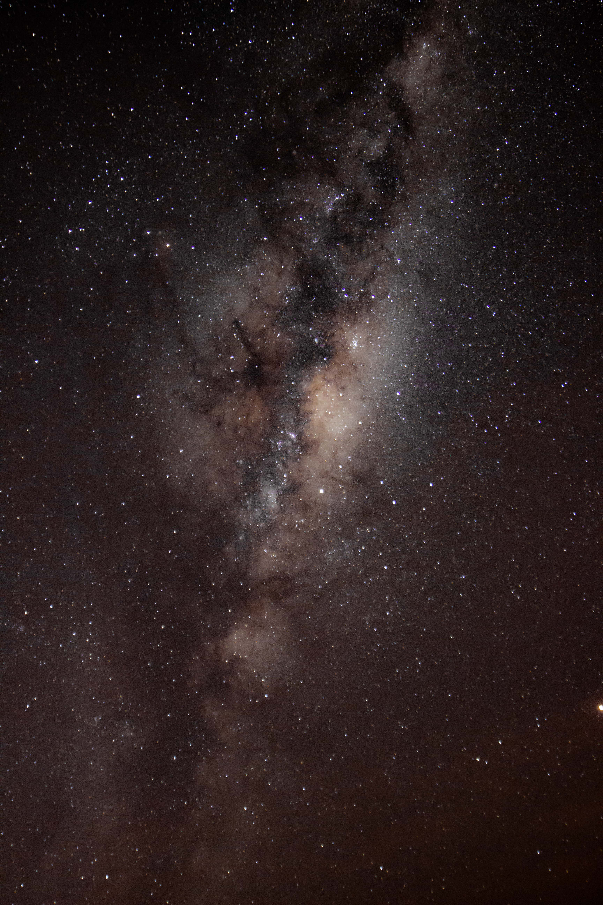
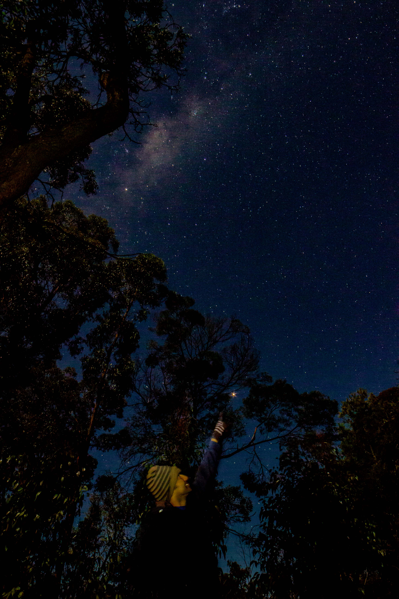
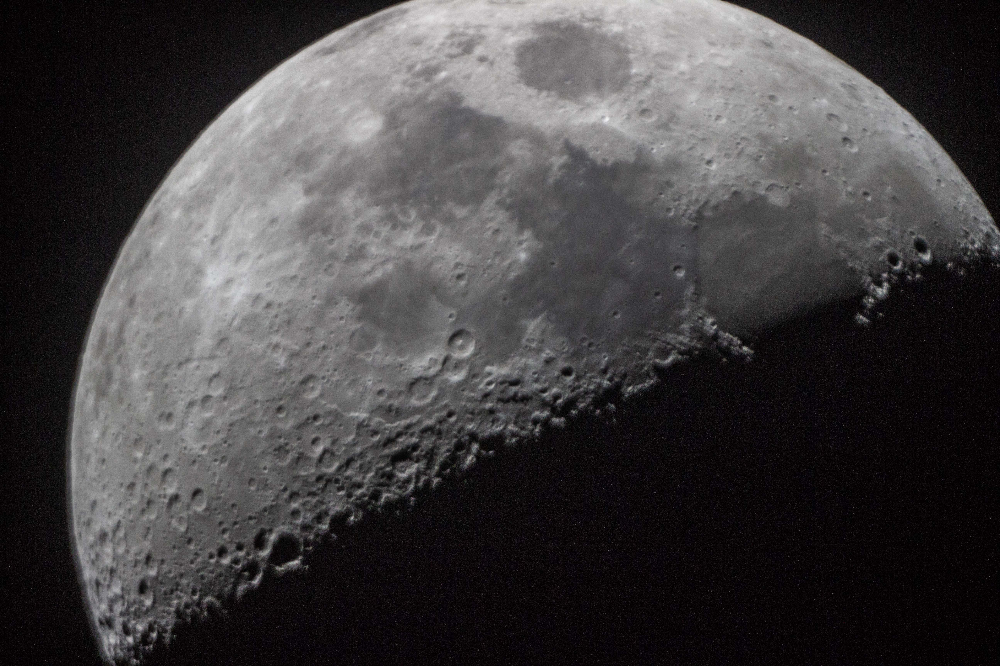
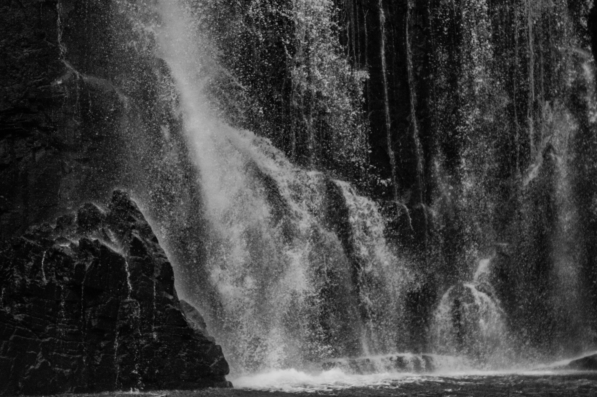
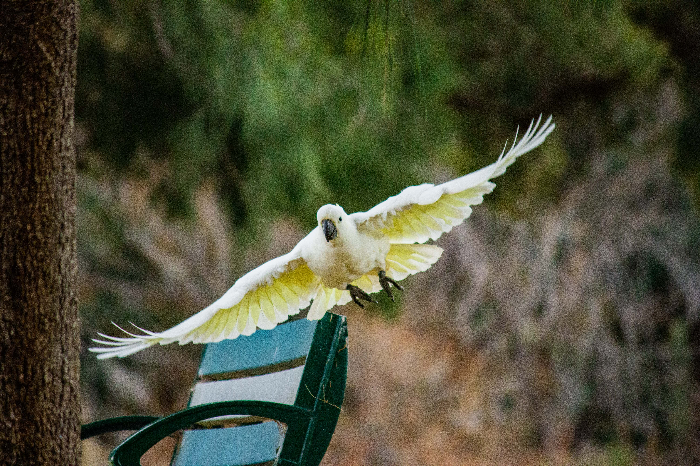
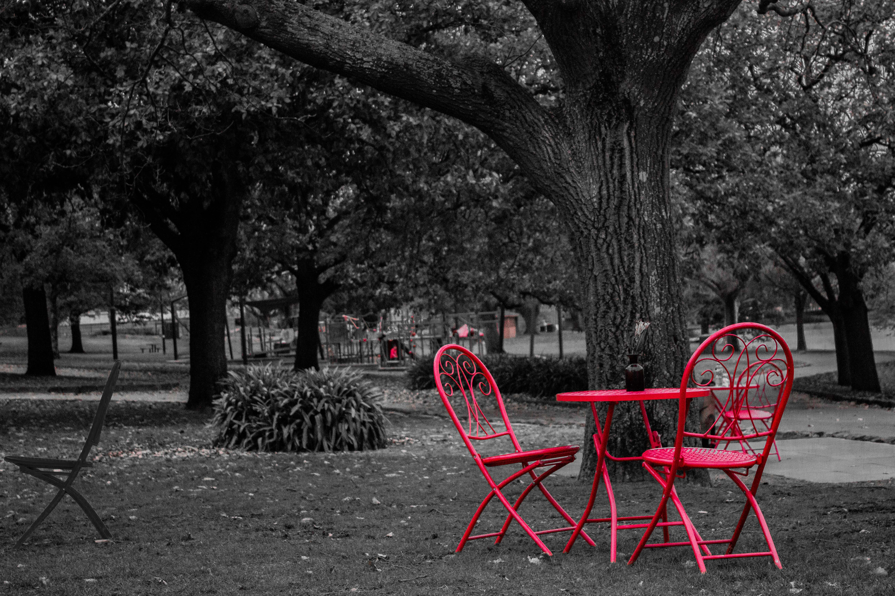
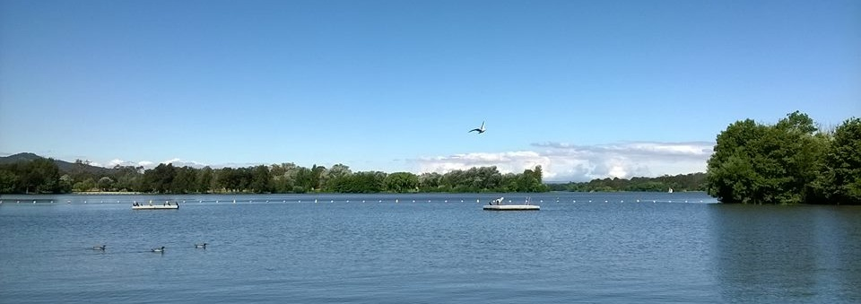

Hobbies
My hobbies include sketching and drawing cartoons. Photography, primarily astrophotography, has been the most recent addition to this list! I'm just starting to learn the tips and tricks of the trade - here's some preliminary evidence!
     If the weather is good, I enjoy going hiking or bushwalking. If not, I stay indoors and play cards.
I am also very keen to play badminton and cricket, and I love to cook too.

Travelling makes me happy and luckliy enough, I get to travel quite often for work. Here are some photos from my trips. Enjoy!